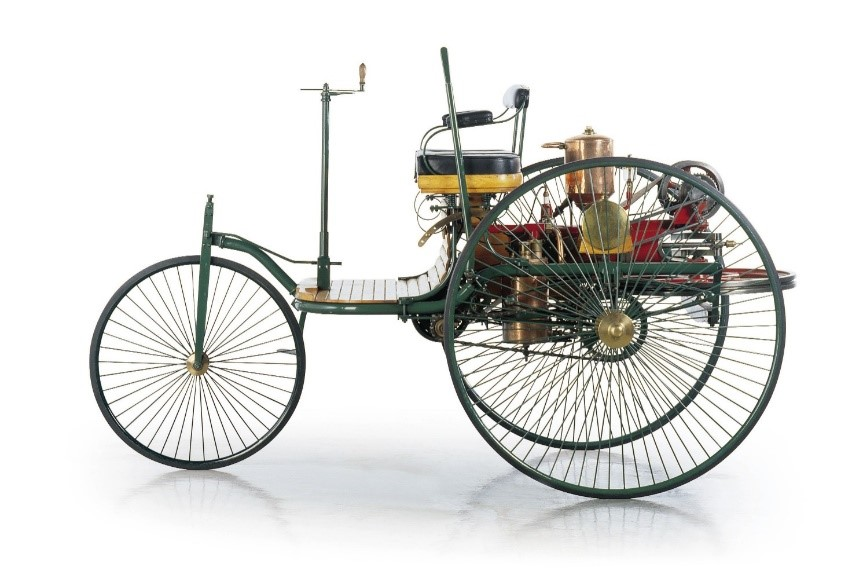
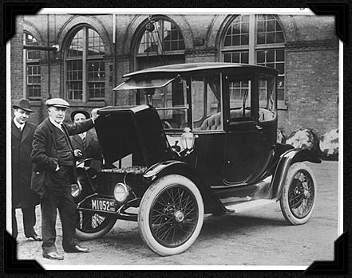

History of the Automobile
History
1885
Karl Benz develops the first-ever automobile. His three-wheeled Motorwagen was powered by the first internal combustion engine
1908
The Ford Model T was the first mass-produced automobile. It was marketed to the middle class and featured interchangeable parts.
1913
Henry Ford creates the first assembly line for the Model T. The production time to build a Model T went from 12 hours to 2 hours and 30 minutes per car.

1997
The first Hybrid automobile created was the Toyota Prius. It featured both a gas combustion engine as well as electric motors and instantly became a worldwide success.